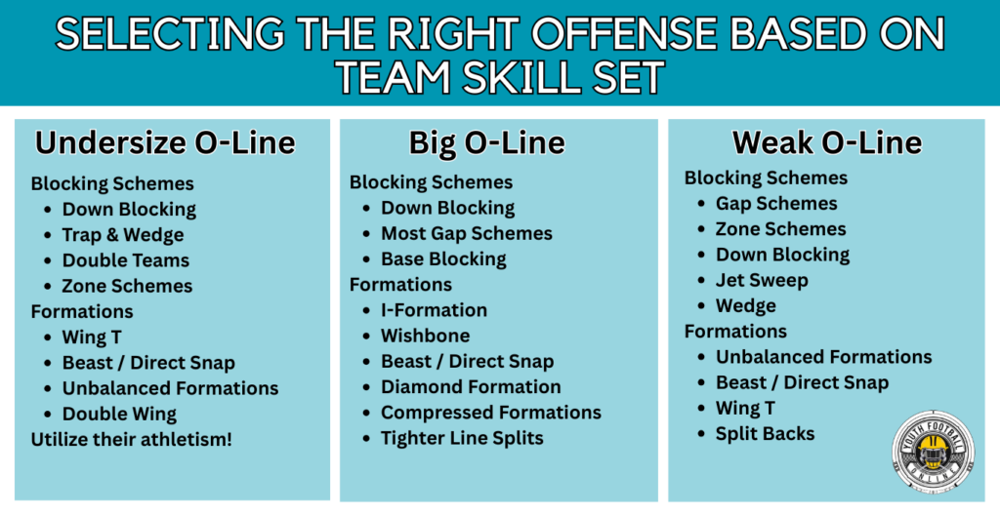
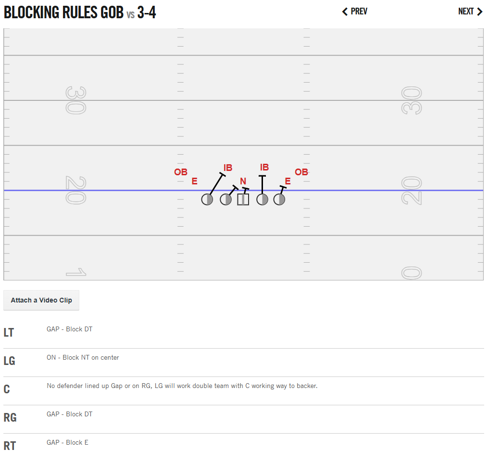
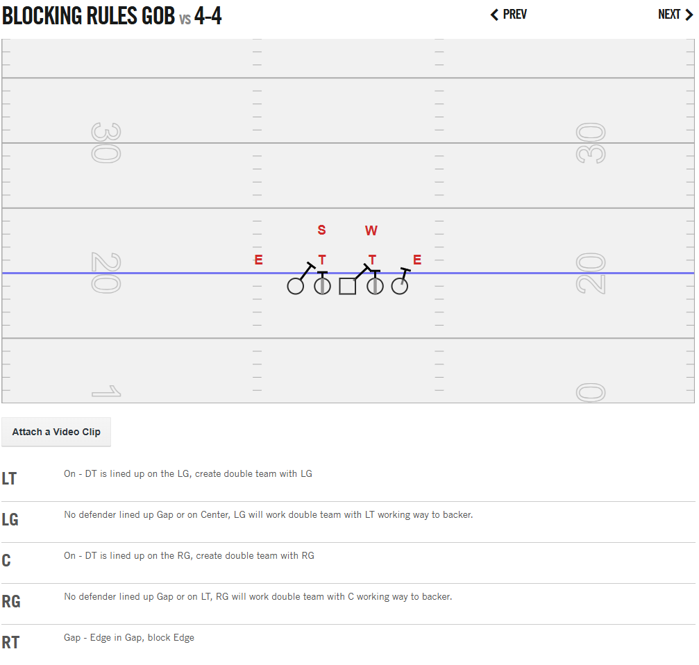
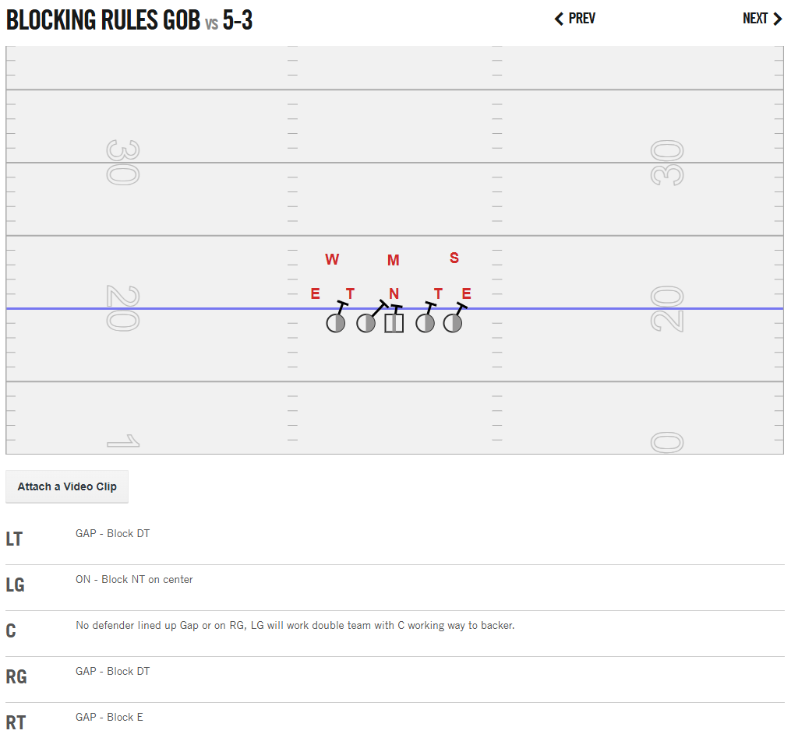
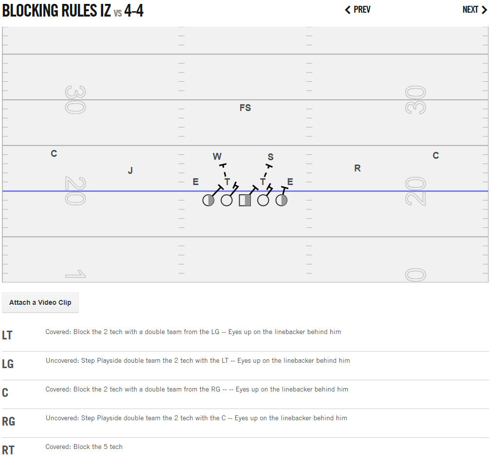
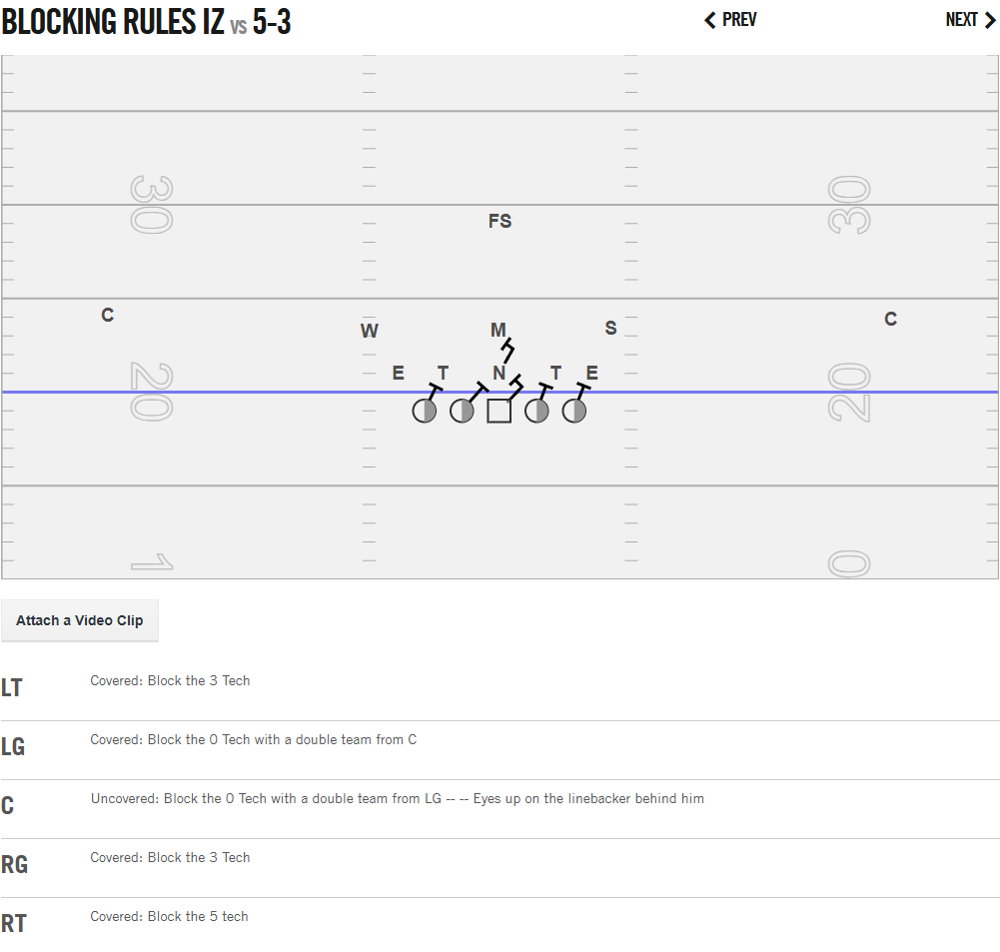

Blocking Schemes For Youth Football
Author: Coach Kyle | Created: June 15, 2025
Youth Football Online has a great article on picking an offense to run for youth football coaches. Additionally, it does a great job of breaking down different offenses by age and grade. They were a tremendous resource for me when I was starting out as a youth football coach, and I want to give them as much credit as possible for the information I learned from them.
For Example This image from YFO is gold:

In my experience, on every team I've coached, the offensive line has always been a weak point and needs to be an area of focus. You don’t win up front by accident — it takes structure, clarity, and commitment.
Before a formation can be determined, a blocking scheme must be selected first. Every play starts with the offensive line. When building an offense, think of it from the inside out. Begin with the scheme — zone, gap, man, or a hybrid — and teach the O-line their rules. Those rules dictate who they're responsible for based on alignment and post-snap movement. If a defender isn’t accounted for by the blocking rules, that’s where formation comes into play — with a back, a tight end, or motion helping to pick up the extra hat.
Now, when it comes to **positioning** — this is where young linemen can make or break a block. You want your players to square up on the man they’re assigned to. That means their hips and shoulders are aligned with the defender they intend to block. Whether it’s in the run game or the pass game, playing square creates leverage, balance, and better recovery if they get beat initially.
Hand placement matters just as much: in the run game, we want thumbs up, elbows tight, hands inside the framework of the defender — ideally striking the chest plate and controlling the near shoulder. In pass protection, hands should shoot inside with a strong punch and reset if necessary. Keep a wide base, stay patient, and keep those hands active.
The following sections focus on what to run when your O-line needs help — and how to build plays that set them up for success.
Personal Tip: I keep my most athletic linemen at guard because they’ll be asked to pull.
🧱 1. Gap Scheme
"Check your play-side inside gap first! If no one's there, block the man on you. If no one's in your gap or on you, work inside to help double team — then climb to the backer!"
Blocking Rule: G.O.B. — Gap, On, Backer
G.O.B. gives every lineman one simple progression to run through on every play, in order.
- G — Gap: Check your play-side inside gap first. If a defender is aligned in your play-side inside gap, he is your responsibility.
- O — On: If there is no defender in your play-side inside gap, block the defender aligned directly over you ("On").
- B — Backer: If there is no defender in your play-side inside gap and no defender aligned over you, work inside to help your teammate with a double team. Once movement is secured, climb to the linebacker. Never immediately bypass a defensive lineman to chase a linebacker.



Double Team Clarification:
If there's a defender lined up over your teammate to your inside, help him double team that defender before working up to the linebacker. Get movement at the line of scrimmage first — then come off the double team once the linebacker declares which way he's going.
Best Plays:
- Power
- Counter
- Duo
- Trap
- Wedge
Formations that Fit:
- I-Formation
- Wing-T
- Double Wing
- Split Backs
- Power I
- Wishbone
- Single Back
- Beast
Why It Works for Youth:
Gap blocking is excellent for youth football because it gives players a defined blocking rule (G.O.B.). It’s easy for kids to understand and execute. This scheme promotes aggression and physicality. It also allows you to double team defensive linemen, which is needed in youth football. It’s great for when you have a size or strength advantage on the offensive line.
Coaching Philosophy:
G.O.B. is designed to:
- Give every lineman one simple progression.
- Reduce hesitation.
- Create natural double teams.
- Be easy for young players to remember.
- Work well against multiple defensive fronts.
🧠 2. Zone Scheme
"Everyone take a 45-degree step play-side with your inside foot and block whoever gets in your zone! Linemen, work together!"
Blocking Rule:
Linemen are responsible for an area or "zone" rather than a specific defender. They step in unison (play-side) and block the first defender that enters their zone. If no defender is in their immediate zone, they look to help double-team a defender or climb to the second level (linebackers).


- Covered: If a defender is aligned in your zone (over you or slightly shaded), you block him.
- Uncovered: If no defender is in your zone, you take your zone step, check the next adjacent gap, and then look to double team with your adjacent teammate or climb to block a linebacker.
Footwork:
The first step is critical. For inside zone, linemen take a short, lateral step with their inside foot, followed by a second step to gain ground and leverage. For outside zone, the steps are more aggressive toward the sideline to stretch the defense horizontally.
Best Plays:
- Inside Zone
- Outside Zone (Stretch)
Formations that Fit:
- Spread
- Pistol
- Shotgun
- Athletic OL formations
Why It Works for Youth:
Zone blocking can be effective with athletic linemen who can move well. It helps create running lanes by getting defenders flowing laterally. It simplifies assignments when players understand "blocking an area," but it does require communication and linemen working in unison, which can be challenging for younger teams.
🔩 3. Man Scheme
"Everyone block the man lined up across from you! You are responsible for YOUR man."
Blocking Rule:
Each offensive lineman is assigned to block a specific defensive lineman or linebacker, usually based on their pre-snap alignment. Think: "I have the guy in front of me."
- The center often calls out numbering for defensive linemen (e.g., "0" for nose, "1" for shade, "2i", "2", "3" for tackles/ends) and linebackers.
- Assignments can change based on defensive stunts or blitzes, requiring quick recognition.
Best Plays:
- Dive
- Isolation (Iso)
- Veer
Formations that Fit:
- I-Formation
- Split Backs
- Wishbone
- Any formation where you want to create one-on-one matchups.
Why It Works for Youth:
Man blocking is straightforward conceptually: "block that player." This can be good for very young or inexperienced lines. However, it can be difficult if your players are outmatched physically or athletically by their assigned defender. It relies heavily on individual skill and determination.
📐 4. Reach Blocking
"Get to the outside shoulder of the defender! Don't let them get outside of you!"
Blocking Rule:
The offensive lineman's goal is to get their helmet to the play-side of the defender, effectively "reaching" them to seal them off from the direction of the play. This is primarily used for outside runs. Good coaching phrase: "Head outside, seal him inside!"
- Requires a quick first step and good leverage.
- If you can't get outside, try to "log" the defender (push them wide past the play).
Best Plays:
- Jet Sweep
- Toss Sweep
- Outside Zone (often involves reach blocks by multiple linemen)
Formations that Fit:
- Spread
- Wing-T
- Shotgun
- Any formation designed for fast, outside attacks.
Why It Works for Youth:
Reach blocking is essential for getting fast ball carriers to the edge. It demands good footwork and quickness from linemen. It can be challenging for bigger, less mobile players, but it's a critical skill for successful outside running plays. When executed well, it springs big gains.
🧲 5. Down Blocking
"Everyone block the defender lined up inside (or diagonally inside) of you! Create a wall!"
Blocking Rule:
Each lineman blocks the defender lined up inside of them, often at an angle. This is a key component of many gap scheme plays. It's about sealing the inside so the play can go off-tackle or outside.
- Lineman takes an aggressive step with their inside foot towards the defender.
- Aim to get your head across the front of the defender.
- Drive the defender down the line or create a pile.
Best Plays:
- Power (often involves down blocks by the play-side tackle and tight end)
- Counter (backside often down blocks)
- Trap
- Cross
Formations that Fit:
- I-Formation
- Wing-T
- Beast
- Any formation using gap principles.
Why It Works for Youth:
Down blocking is an aggressive, relatively simple block that young players can execute. It creates good angles and leverage for the blocker. It’s effective for creating double teams at the point of attack and clearing out defenders for inside runs. It’s a fundamental block that all young linemen should learn.
🛡️ 6. Slide Protection (Pass Blocking)
"Linemen, slide to your responsibility! Protect the quarterback!"
Blocking Rule:
Linemen take a coordinated step (e.g., "Slide Left" or "Slide Right") and are responsible for any defender that enters their assigned gap or zone. It creates a "wall" of protection. The line will typically slide towards the perceived biggest threat or the direction of the rollout.
- Half-Slide: Often, one side of the line (e.g., center, guard, tackle) will zone slide, while the other side (e.g., guard, tackle) uses man-blocking principles.
- Full Slide: All five linemen slide in one direction.
- Linemen must maintain proper spacing and pass set (kick slide, wide base, hands ready).
Best Plays:
- Any passing play (Dropback, Play-Action, Rollout)
Formations that Fit:
- Shotgun
- Pistol
- Single Back
- Any formation where you need to provide time for the QB to throw.
Why It Works for Youth:
Slide protection can be simpler for young linemen than pure man-to-man pass blocking because it defines areas of responsibility. It helps in picking up blitzes and stunts if linemen communicate and stay disciplined. However, it requires good coaching on footwork, hand placement, and recognizing threats.
🚨 Cheat Code for New Coaches
This table provides a quick summary of when to use each blocking scheme based on your team's strengths and goals.
| Scheme | Rule | First Step | Best Plays | Formations |
|---|---|---|---|---|
| Gap | G.O.B. (Gap, On, Backer) | Step to Gap/Man | Power, Counter, Trap, Wedge | I-Form, Wing-T, Beast |
| Zone | Covered/Uncovered | 45° play-side (inside foot) | Inside Zone, Outside Zone | Spread, Pistol, Shotgun |
| Man | Block man on you | Step to Man | Dive, Iso, Veer | I-Form, Split Backs |
| Reach | Head outside, seal | Quick outside step | Jet Sweep, Toss Sweep | Spread, Wing-T |
| Down | Block defender inside | Aggressive inside step | Power, Counter, Cross | I-Form, Wing-T, Beast |
| Slide Pro | Zone slide (L/R) | Kick slide to zone | Pass Plays | Shotgun, Pistol |